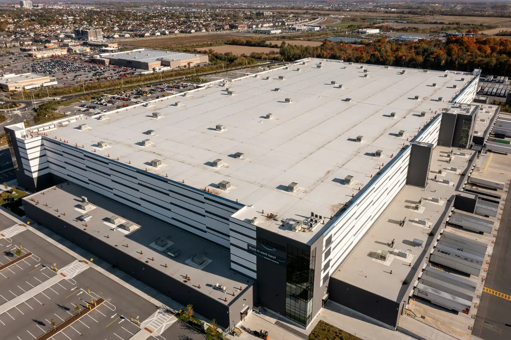
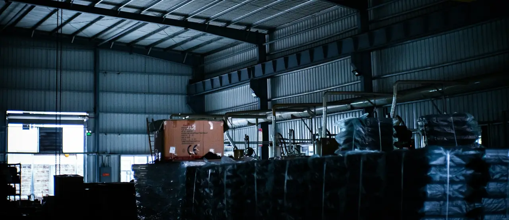
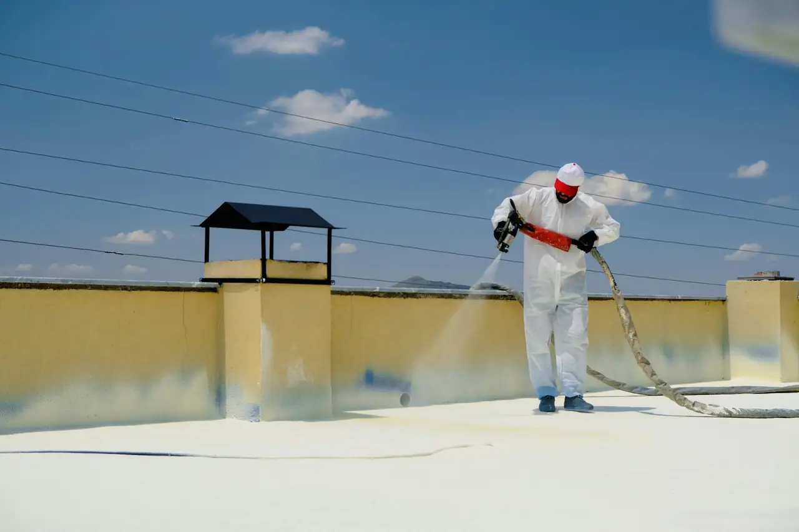
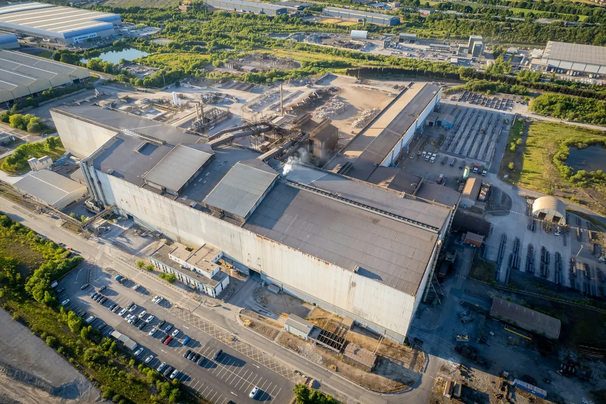
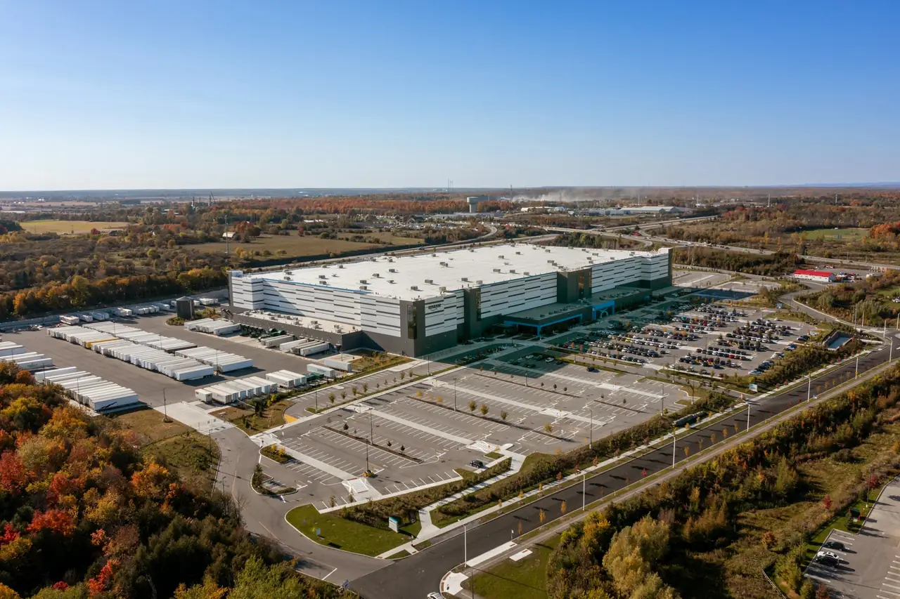
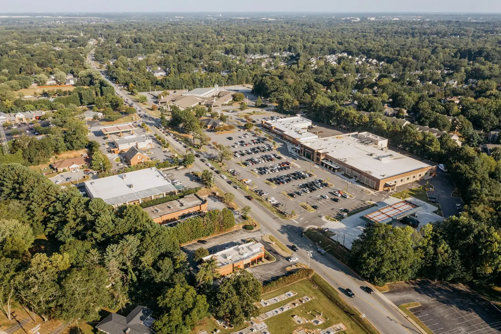
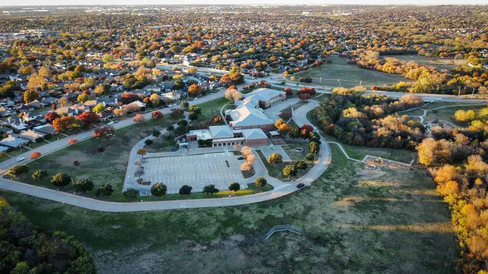
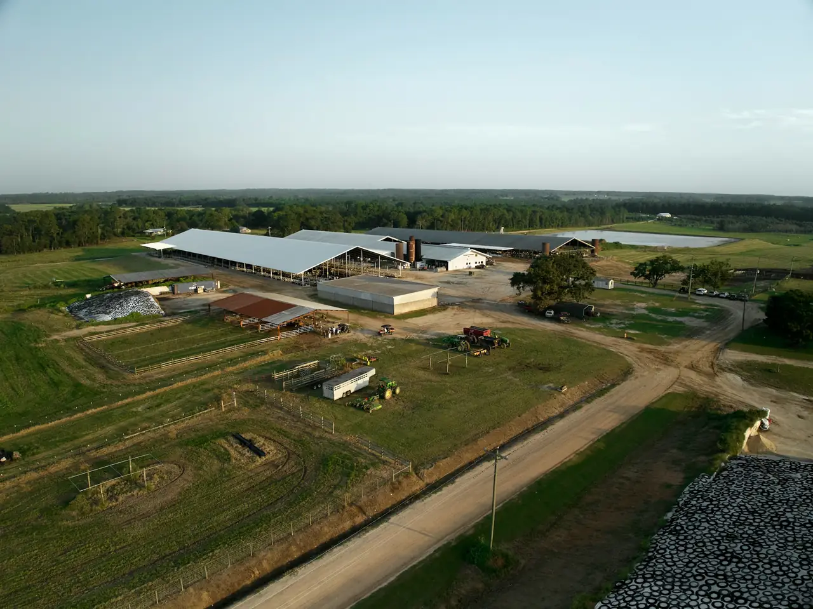
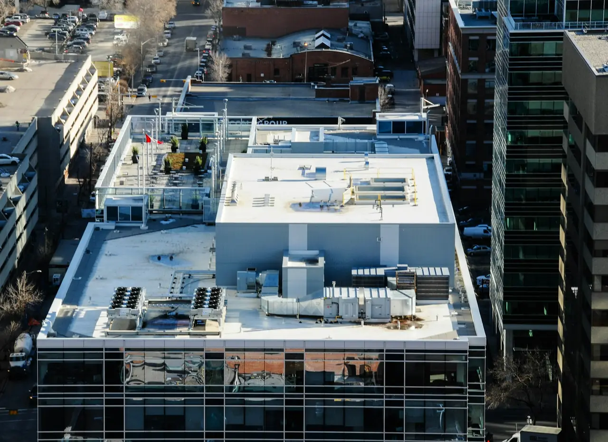
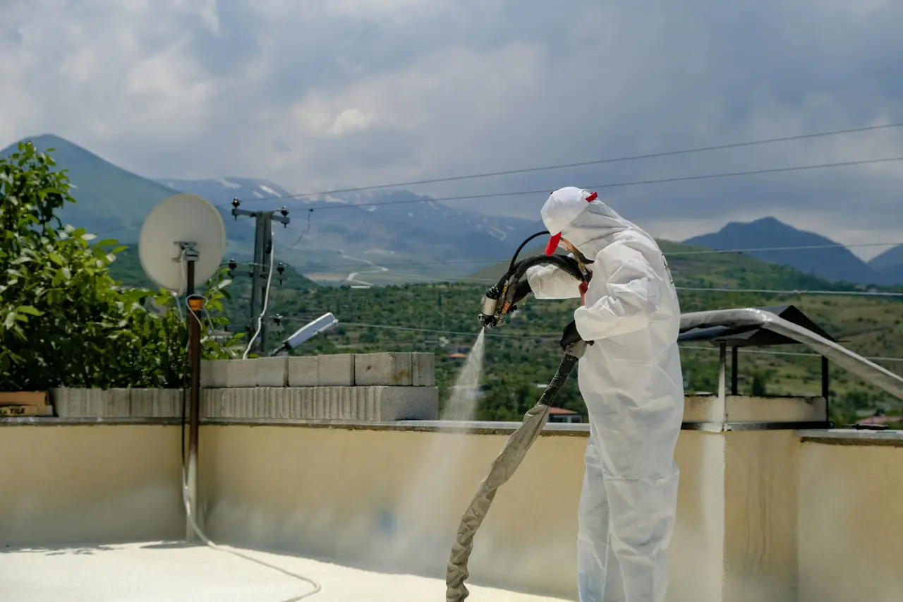

I vostri tetti riflettono!
Il vostro specialista del cool roof in Italia
ALBEDIA, specialista dei rivestimenti riflettenti anti-calore per edifici professionali, su tutti i tipi di copertura, in Francia, Svizzera, Italia e Spagna.
- Magazzini, stabilimenti, negozi, uffici
- Applicazione sulla copertura esistente
- Studio dell’edificio prima del preventivo
Il problema
Ogni estate, la vostra copertura vi costa molto cara
In pieno sole, una copertura scura si comporta come un radiatore posato sul vostro edificio. Questo calore lo pagate in diversi modi, e ogni estate un po’ di più.
85-95%
della radiazione solare è assorbita da una copertura tradizionale scura.
66-85 °C
sulla superficie di una copertura tradizionale in piena estate.
31-47 °C
in più rispetto all’aria ambiente, contro 6-11 °C per una copertura riflettente.

Una climatizzazione che lavora al massimo
Più il tetto si scalda, più calore la climatizzazione deve smaltire. In oltre 25 studi raccolti dall’US EPA, una copertura riflettente ha ridotto i consumi di climatizzazione dal 2 al 40%, e del 20% in media.
Picchi di potenza che pesano sulla bolletta
La domanda di elettricità raggiunge il massimo nelle ore più calde. Gli stessi studi rilevano riduzioni del picco di climatizzazione dal 14 al 38% con un cool roof.
Squadre meno efficienti
Officine, banchine di carico, superfici di vendita: quando il calore si accumula sotto il tetto, il comfort e la vigilanza diminuiscono.
Una copertura che si usura più in fretta
Riscaldata ogni giorno e raffreddata di notte, una copertura scura subisce forti escursioni termiche che affaticano i suoi materiali.
Fonte: US EPA, Reducing Urban Heat Islands, capitolo Cool Roofs. Si tratta di ordini di grandezza tratti da studi pubblicati: il guadagno reale dipende da ciascun edificio, ed è ciò che valuta il nostro studio preliminare. Tutte le fonti
Simulatore
Stimate i vostri risparmi
Descrivete il vostro edificio: stimiamo i suoi consumi estivi e invernali e ciò che una copertura riflettente può farvi risparmiare. Per un edificio in Francia, il simulatore calcola anche l’incentivo CEE. Se conoscete il vostro consumo annuo, regolate il cursore.
* Stima indicativa e non contrattuale, basata su valori medi pubblicati e sulle ipotesi descritte qui sotto, per una copertura senza ombreggiamento. Il guadagno reale dipende dal vostro edificio: è ciò che valuta il nostro studio preliminare.
Metodo e fonti del simulatore
- Zona climatica: in Francia, ricavata dal dipartimento, secondo la suddivisione H1, H2 e H3 delle schede CEE.
- Consumo stimato: superficie utile × consumo medio del tipo di edificio (Osservatorio francese dell’immobiliare sostenibile, OID, barometro 2025, dati 2024): uffici 126 kWh/m²/anno, commercio non alimentare 110, magazzini logistici 65, stoccaggio non riscaldato 19 (agricoltura). In assenza di dati pubblicati, per l’industria si usa il valore dei magazzini e per gli edifici pubblici quello degli uffici. Sostituitelo con il vostro consumo reale, se lo conoscete.
- Quota della climatizzazione: ipotesi ALBEDIA del 15% del consumo di un edificio interamente climatizzato in zona H1, del 20% in zona H2 e del 30% in zona H3 (Svizzera 15%, Italia e Spagna 30%), la metà se è climatizzata solo una parte dell’edificio.
- Risparmi: il 20% della climatizzazione dell’ultimo piano, sotto la copertura. È il guadagno medio rilevato dall’US EPA su oltre 25 studi, che va dal 2 al 40% a seconda degli edifici. Per una copertura già grigia o chiara, il guadagno considerato è dimezzato (ipotesi ALBEDIA). Il leggero aumento del riscaldamento in inverno non viene detratto: secondo l’US EPA è in genere compensato dai risparmi estivi, perché il sole è più basso e le giornate più corte.
- Incentivo CEE (solo Francia): scheda BAT-EN-112, cioè 160, 170 o 270 kWh cumac per m² di copertura trattata in zona H1, H2 o H3, valorizzati a 8,70 € per MWh cumac (indice di prezzo a termine dei CEE classici di giugno 2026, ministero francese della Transizione ecologica). L’importo versato dipende dal finanziatore. Condizioni: edificio terziario a uso commerciale, copertura sopra un volume chiuso e climatizzato, riscaldamento e raffrescamento a pompa di calore, nessun rivestimento riflettente esistente, prodotto con indice di riflettanza solare (SRI) superiore a 100 da nuovo e a 90 dopo l’invecchiamento, lavori eseguiti da un professionista.
- Prezzo del kWh: 0,20 € IVA esclusa per impostazione predefinita, da adattare al vostro contratto. Riferimento: 0,25 € IVA esclusa per i piccoli clienti professionali in Francia nel primo semestre 2026 (Eurostat).
Fonti: US EPA (effetto invernale) · scheda BAT-EN-112 · indici di prezzo dei CEE · barometro OID 2025 · prezzi Eurostat (fonti in inglese e in francese)
Riscaldamento globale
Estati sempre più calde: le conclusioni degli esperti dell’IPCC
Il Gruppo intergovernativo sul cambiamento climatico (IPCC) sintetizza le conoscenze scientifiche sul clima. Le conclusioni del suo Sesto rapporto di valutazione riguardano direttamente i vostri edifici.
+1,1 °C
Un riscaldamento già in atto
La temperatura media della superficie terrestre è aumentata di circa 1,1 °C tra il 1850-1900 e il 2011-2020. Per l’IPCC è «inequivocabile» che l’influenza umana abbia riscaldato l’atmosfera, l’oceano e le terre emerse.
1950
Dagli anni Cinquanta, ondate di calore più frequenti
È praticamente certo che gli estremi di caldo, ondate di calore comprese, siano diventati più frequenti e più intensi nella maggior parte delle regioni continentali dagli anni Cinquanta.
2,8 volte
Picchi di caldo che tornano più spesso
Sulle terre emerse, un caldo estremo che senza l’influenza umana si verificava in media una volta ogni dieci anni si presenta già 2,8 volte più spesso, ed è più intenso di circa 1,2 °C.
5,6 volte
E la tendenza si accentua
Con un riscaldamento globale di 2 °C, questo picco di caldo si verificherebbe 5,6 volte più spesso, e 9,4 volte a 4 °C. Ogni ulteriore aumento del riscaldamento rende gli estremi più marcati.
Per i vostri edifici, significa estati più calde e coperture che accumulano sempre più calore. Rendere riflettente la copertura significa adattare fin da ora il vostro patrimonio al clima che verrà.
Adattate la vostra coperturaFonte: IPCC, Sesto rapporto di valutazione, Gruppo di lavoro I, Climate Change 2021: The Physical Science Basis, Sintesi per i decisori politici, punti A.1, A.1.2, A.3.1 e B.2.2 e figura SPM.6. ipcc.ch (in inglese)
Prima diagnosi
Il vostro edificio è troppo caldo in estate?
Il cool roof merita uno studio se vi riconoscete in almeno due di queste situazioni.
- Una grande copertura scura: guaina bituminosa, lamiera grecata scura o tetto piano grigio.
- Un tetto poco o per nulla isolato, come in molti magazzini e officine.
- Locali che si surriscaldano fin dalle prime giornate calde.
- Una climatizzazione che lavora molto per tutta l’estate, oppure merci sensibili al calore.
La soluzione
Un rivestimento che rinvia il sole
Il cool roof rende la copertura molto riflettente e molto emissiva. Assorbe molta meno radiazione e smaltisce meglio il calore che ha captato.
Riflettanza delle coperture tradizionali e dei materiali cool roof: US EPA. Il principio in dettaglio
La domanda che ci viene posta
E in inverno, l’edificio sarà più freddo?
Una copertura riflettente capta meno sole anche in inverno. Ma in questa stagione il sole è basso e le giornate sono corte: gli apporti dalla copertura sono modesti. Nella maggior parte dei climi studiati, il leggero aumento del riscaldamento resta inferiore ai risparmi estivi.
Il bilancio dipende comunque dall’edificio. Uno studio realizzato per la Federazione francese dell’edilizia conclude che l’effetto è molto debole quando il riscaldamento rappresenta il 75% del fabbisogno, e che il bilancio è favorevole quando la climatizzazione supera il 30% del fabbisogno. Per questo studiamo il vostro edificio prima di proporvi qualsiasi intervento.
In estate
Sole alto, giornate lunghe: la copertura riceve la maggior parte degli apporti solari. È qui che il cool roof fa la differenza.
In inverno
Sole basso, giornate corte: gli apporti dal tetto sono modesti, e lo è anche la perdita dovuta al rivestimento.

Il cool roof di ALBEDIA
Aumentate l’albedo!
Un rivestimento bianco molto riflettente, applicato sulla vostra copertura esistente: il sole torna verso il cielo invece di scaldare i vostri locali.
Il vostro settore
Una soluzione per ogni tipo di edificio
I risultati migliori si ottengono sulle grandi coperture poco isolate e negli edifici che hanno bisogno di fresco in estate.

IndustriaOfficine e siti produttivi
LogisticaMagazzini e piattaforme
Commercio e distribuzioneNegozi e superfici di vendita Uffici e terziarioUffici e locali professionali
Uffici e terziarioUffici e locali professionali
Edifici pubbliciScuole, palestre, strutture
AgricolturaAllevamento, stoccaggio, trasformazioneIl sistema
Tre strati per una copertura che dura
- 1
Il supporto esistente, preparato
Pulito, riparato e trattato nei punti singolari. È lui a determinare l’adesione e la durata del rivestimento.
- 2
Il primer
Assicura l’aggrappaggio del rivestimento. La sua natura dipende dal supporto: metallo, bitume, membrana sintetica o calcestruzzo.
- 3
Il rivestimento riflettente
Applicato in una o più mani, apporta la riflettanza e l’emissività. Le sue prestazioni si misurano con l’indice SRI, da nuovo e dopo l’invecchiamento.
Il numero di mani e i prodotti dipendono dal sistema scelto per la vostra copertura.
Confrontare prima di decidere
Il cool roof a confronto con le altre soluzioni
Contro il caldo estivo esistono diverse leve. Non trattano la stessa cosa e non richiedono gli stessi lavori.
| Soluzione | Cosa tratta | Lavori | Effetto in estate | Da sapere |
|---|---|---|---|---|
| Cool roof | Il calore assorbito dalla copertura, alla fonte | Applicazione sulla copertura esistente, senza rimozione | Meno apporti solari, copertura e locali più freschi | Non isola e non impermeabilizza. Richiede manutenzione. |
| Climatizzazione | Il calore già entrato nei locali | Impianti, reti, potenza elettrica | Fresco garantito nelle zone servite | Consuma energia per ogni ora di funzionamento. |
| Rifacimento dell’impermeabilizzazione | Le infiltrazioni e l’usura della membrana | Rimozione o sovrapposizione dell’impermeabilizzazione | Nessuno, salvo con una membrana chiara riflettente | Indispensabile se il supporto è degradato. |
| Isolamento della copertura | Gli scambi di calore attraverso il tetto | Lavori pesanti, spesso con rifacimento dell’impermeabilizzazione | Rallenta l’ingresso del calore | Utile tutto l’anno, in particolare per il riscaldamento. |
Queste soluzioni si combinano: una nuova impermeabilizzazione può essere riflettente, e anche una copertura isolata trae vantaggio dal restare fresca.
Durabilità
Prestazioni che durano, se il rivestimento è ben applicato e mantenuto
Applicati correttamente, numerosi rivestimenti cool roof hanno resistito per oltre vent’anni. Al contrario, un’applicazione frettolosa può provocare distacchi e sfaldamenti in pochi anni.
La riflettanza diminuisce soprattutto il primo anno, a causa dello sporco: di circa il 20% con una manutenzione corretta. Una pulizia secondo le indicazioni del produttore aiuta a preservarla.
- Preparazione accurata del supporto prima di ogni applicazione
- Condizioni di temperatura e umidità rispettate durante il cantiere
- Scheda di manutenzione consegnata al collaudo dei lavori
- Contratto di manutenzione proposto per mantenere la riflettanza nel tempo
Fonte: US EPA, Reducing Urban Heat Islands, capitolo Cool Roofs.

Quale procedimento?
Quattro famiglie di procedimenti riflettenti
A seconda della natura del supporto e del suo stato, esistono diversi procedimenti. Il sopralluogo della copertura permette di scegliere quello giusto.
Pitture riflettenti
Applicate su un supporto sano, apportano la riflettanza. Non garantiscono né l’impermeabilità né l’isolamento.
Sistemi impermeabilizzanti liquidi
Resine applicate in opera che formano allo stesso tempo un’impermeabilizzazione e una superficie chiara.
Impermeabilizzazioni bituminose riflettenti
Membrane bituminose con la faccia esposta chiara e riflettente.
Impermeabilizzazioni sintetiche riflettenti
Membrane sintetiche di colore chiaro, posate in occasione di un rifacimento dell’impermeabilizzazione.
Classificazione tratta dallo studio realizzato per la Federazione francese dell’edilizia.
I nostri requisiti
Cosa verifichiamo in ogni cantiere
La riflettanza misurata
Un rivestimento il cui indice SRI è misurato secondo la norma ASTM E1980, da nuovo e dopo l’invecchiamento.
La reazione al fuoco
La classificazione di comportamento al fuoco esterno del sistema di copertura, ad esempio BROOF(t3), quando l’edificio lo richiede: edifici aperti al pubblico, stabilimenti soggetti a normative specifiche, edifici alti.
La compatibilità del supporto
Un procedimento adatto al materiale e al suo stato, applicato secondo le prescrizioni del produttore.
La sicurezza in copertura
Accessi, protezioni collettive e segnaletica organizzati prima di ogni intervento.
Il nostro metodo
Cinque fasi, dal sopralluogo alla manutenzione



Sopralluogo della copertura
Supporto, stato, pendenza, punti singolari e accesso in sicurezza.
Studio e preventivo
Interesse del cool roof per il vostro edificio, d’estate come d’inverno, e ammissibilità agli incentivi.
Preparazione del supporto
Pulizia, riparazioni puntuali e trattamento dei punti singolari.
Applicazione
Primer e rivestimento riflettente, nelle condizioni prescritte dal produttore.
Collaudo e follow-up
Controllo del cantiere, fascicolo di fine lavori e manutenzione, se lo desiderate.
Perché ALBEDIA
Un partner che vi dice la verità sulla vostra copertura
Un parere franco
Se il cool roof non è adatto al vostro edificio, ve lo diciamo prima di qualsiasi impegno.
Un unico interlocutore
Dal sopralluogo al collaudo, la stessa persona segue la vostra pratica.
Prestazioni documentate
Schede tecniche e valori SRI del prodotto applicato, consegnati con il fascicolo di fine lavori.
Un cantiere organizzato sulla vostra attività
I lavori si svolgono sul tetto. Pianifichiamo con voi accessi e orari.
Domande frequenti
Le domande che ci vengono poste più spesso
Risultati, inverno, coperture compatibili, incentivi: le risposte brevi alle domande che tornano in ogni progetto.
Leggete la guida al cool roofChe cos’è un cool roof?
Un cool roof, o tetto freddo, è una copertura resa molto riflettente e molto emissiva. Nella maggior parte dei casi, sul manto di copertura esistente si applica un rivestimento chiaro che rinvia la maggior parte della radiazione solare e smaltisce rapidamente il calore residuo.
Risultato: la copertura si scalda molto meno e trasmette meno calore all’edificio.
Quali risultati ci si può aspettare?
Gli studi raccolti dall’agenzia statunitense per la protezione dell’ambiente (US EPA) riportano una copertura più fresca di 28-33 °C nelle ore più calde dell’estate, risparmi sulla climatizzazione dal 2 a oltre il 40% (20% in media) e una riduzione dei picchi dal 14 al 38%.
Questi valori variano molto da un edificio all’altro: isolamento della copertura, utilizzo, climatizzazione, clima. Il nostro studio preliminare serve a stimare l’interesse per il vostro edificio.
Il cool roof aumenta il riscaldamento in inverno?
Leggermente, perché anche in inverno la copertura capta meno sole. Ma in quella stagione il sole è basso e le giornate sono corte: nella maggior parte dei climi studiati, questa penalità resta inferiore ai risparmi estivi (US EPA).
Pesa di più per un edificio soprattutto riscaldato, in un clima freddo. Uno studio realizzato per la Federazione francese dell’edilizia (FFB) conclude che l’effetto è molto debole quando il riscaldamento rappresenta il 75% del fabbisogno, e che il bilancio è favorevole quando la climatizzazione supera il 30% del fabbisogno. Ne teniamo conto nel nostro studio.
Su quali coperture si può applicare?
Sulla maggior parte dei tetti piani e delle coperture a bassa pendenza: lamiera grecata, impermeabilizzazioni bituminose o sintetiche, calcestruzzo. Le lastre in fibrocemento richiedono prima una ricerca dell’amianto.
Un supporto troppo degradato va prima riparato o rifatto. Per le pitture riflettenti, vanno escluse le coperture con ristagni d’acqua.
Bisogna fermare l’attività durante i lavori?
In genere no: i lavori si svolgono sulla copertura, dall’esterno. Organizziamo con voi accessi, orari e zone di sicurezza per non ostacolare l’attività.
Esistono incentivi economici?
Dipende dal paese. In Francia, a determinate condizioni, la scheda CEE BAT-EN-112 finanzia l’applicazione di un rivestimento riflettente sulla copertura degli edifici terziari a uso commerciale, sopra un volume climatizzato, con un rivestimento di indice SRI superiore a 100 da nuovo e a 90 dopo l’invecchiamento.
La Spagna ha creato nel 2023 un sistema di certificati di risparmio energetico e in Svizzera le regole e gli eventuali contributi dipendono dal cantone. In Italia, come negli altri paesi, verifichiamo durante lo studio cosa si applica al vostro progetto.
Risorse